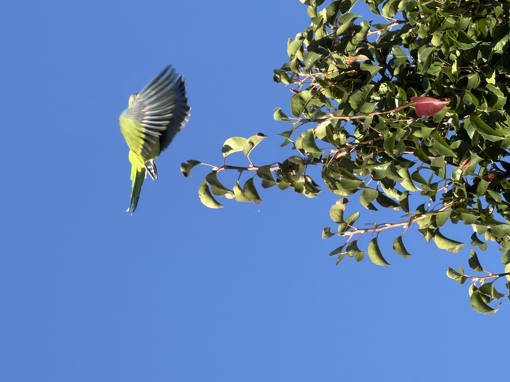
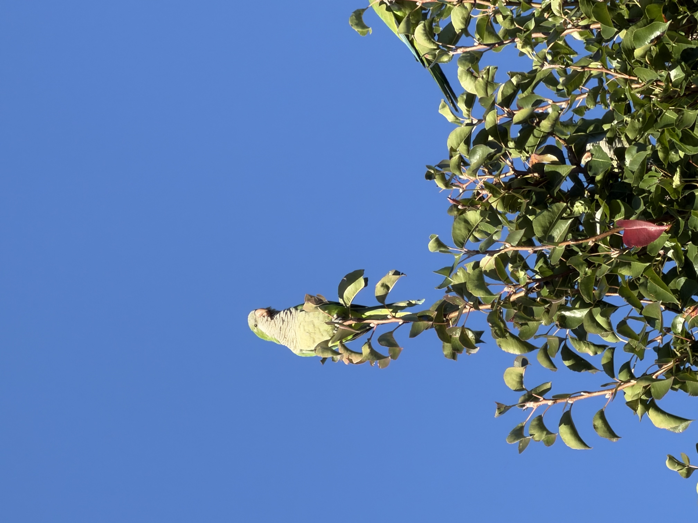
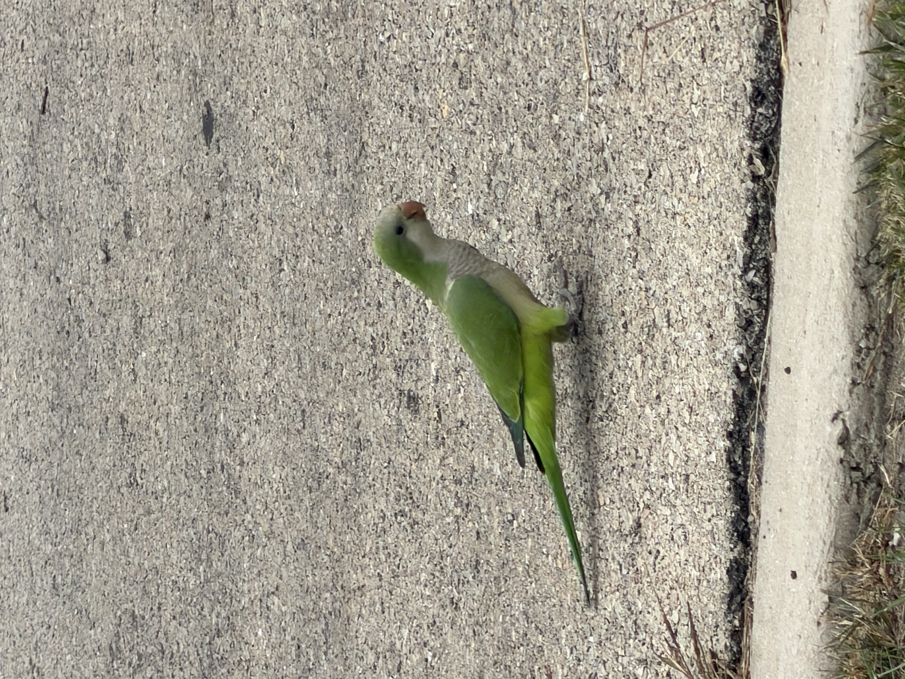

REAL BIRDS. ZERO CHILL.
Small birds.
Big drama.
They have wings. They have opinions.
Meet the neighborhood’s most unserious residents.
THE PHOTOS HAVE BECOME SENTIENT / INSERT ZERO COINS
FLOCK INVADERSTHE BIRDS ARE BACK.
Six neighborhood menaces. Two big bosses.
A boss every 3 waves. Vultures and seagulls take turns.
↑ ↓ ← → / WASD move · SPACE fire · P pause
CATCH THE DROPS · BOLTS rapid fire · SHIELD invincibility · SHIPS escorts · 12 seconds each
Music: “Cruising Down 8bit Lane” · Monument Music / “Blood Ascendant” · David J. Barrios
Ready to play.
THE FEATHERED HALL OF FAME
The usual suspects (29)
27 photos. 2 tiny films. Endless allegations.
Tap a bird. Get the lore.
UNEXPECTED COMPANY / A GUEST SIGHTING
Bro thinks he’s
on the team.
No wings. No feathers. Immaculate confidence.
We’re letting him stay. Nobody wants to argue.
A STUDY IN GOOD TIMING / 03 & 06
Me at work.
Me at 5:01.
The meeting could have been an email.
The bird has somewhere to be.



EXCELLENT COMPANY. NO SMALL TALK.BEHIND THE LENS
Touch grass.
Find weird birds.
This is my little corner of the world. A place for the birds I’ve photographed, from the familiar faces to the blink-and-you’ll-miss-them moments.
No perfect poses. No grand expeditions required.
Just a camera, a little curiosity, and a reason to step outside.
intuitial